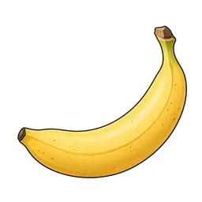

NAME → AROMA → MOLECULE

BANANA酢酸イソアミルISOAMYL ACETATE
名前から香りを思い出す。
構造から、つながりに気づく。
まず名前と香りを見る。カードをめくると、その香りを生む分子の構造式が現れる。日本酒・焼酎／泡盛・ワイン・ビールを横断して、同じ分子と似た骨格を探してみる。

BANANA同じ分子が別の酒にも現れる。カードをめくって関係を見つけた分子を、この端末に記録します。
分子の説明に使う完成版60アイコン。似た言葉でも、たくあんと漬物、コーンとコーンスープのように分けて視覚化しています。